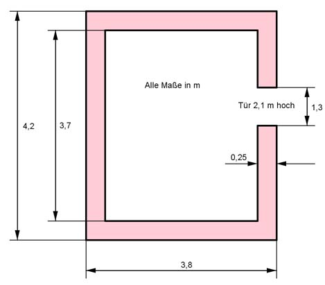

Aufgabe 137 Die Außenmaße eines rechteckigen 8 m hohen Maschinenraums (einschließlich Betonfundament von 80 cm) sind 3,8 m * 4,2 m. An einer Seite ist eine Tür mit den Maßen 1,3 m * 2,1 m ausgespart. Das Mauerwerk ist 25 cm dick. Wie groß ist das Volumen V des Mauerwerks?  Umfang U des Mauerwerks mit Tür: U = 3.8 m + 3,8 m + 3,7 m + 3,7 m = 15 m 80 cm = 0,8 m Höhe des Maschinenraums ohne Fundament = 8 m - 0,8 m = 7,2 m 25 cm = 0,25 m Volumen VM des Mauerwerks einschließlich Tür: VM = U * h = 15 m * 7,2 m * 0,25 m = 27 m³ Volumen der Aussparung für die Tür: VAussparung = 2,1 m * 1,3 m * 0,25 m = 0,6825 m³ V = VM - VAussparung = 27 m³ - 0,6825 m³ = 26,3 m³